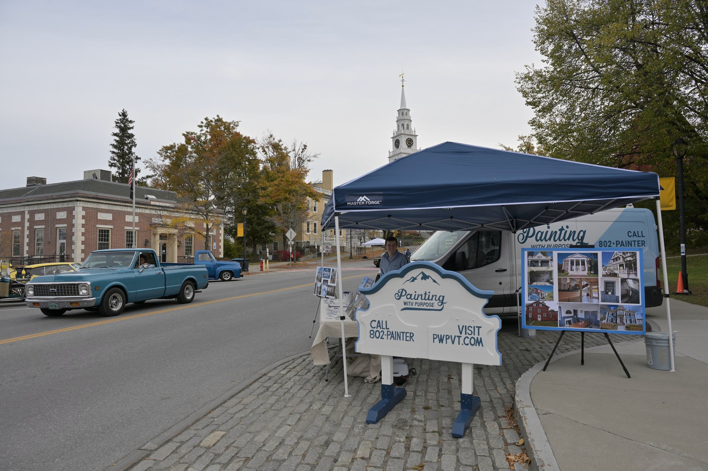
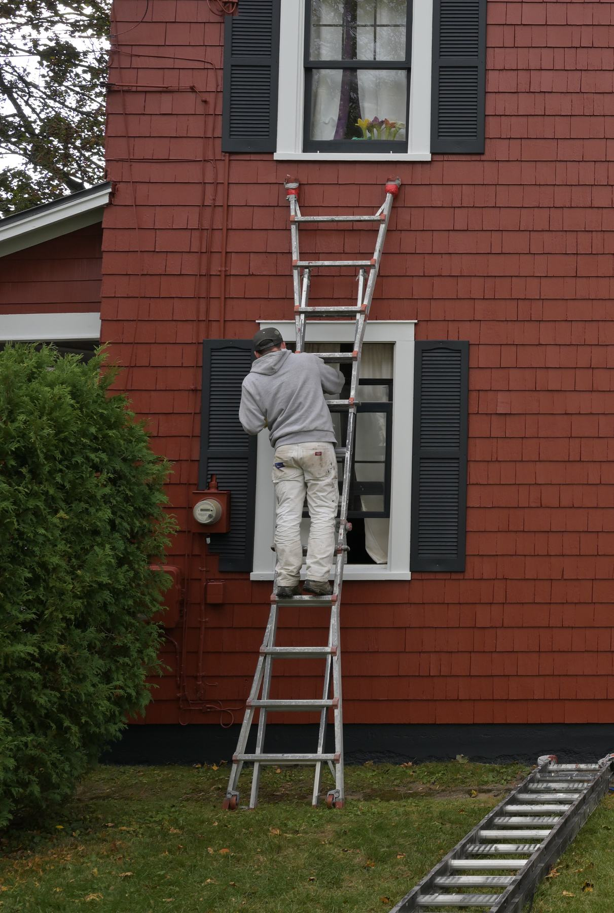
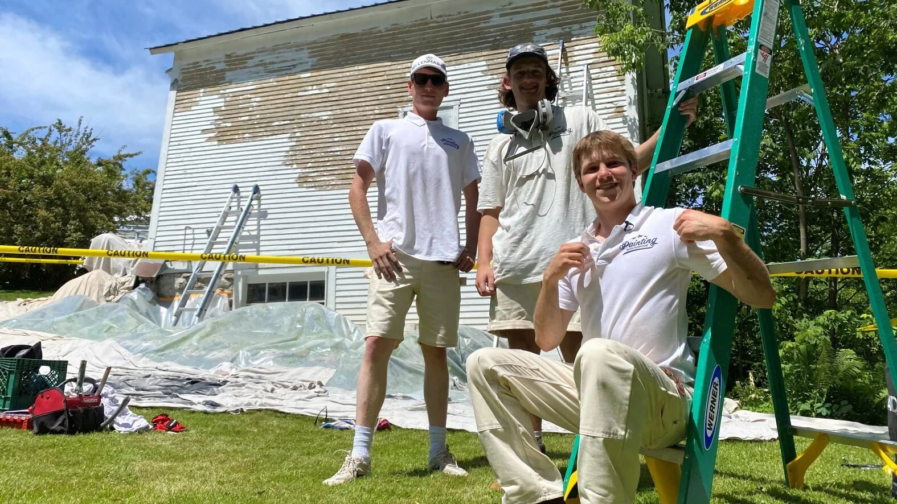

About us
A sign-up sheet, a cold walk, and a friendship on a paint crew.
Zach Dunn and Josh Malek founded Painting With Purpose in February 2022 to paint the greater Burlington area beautifully and help end homelessness in Vermont. Since then the company has completed well over 100 jobs, won the inaugural Joy and Jerry Meyers Cup, and works from its own shop in Winooski.

2021
How it started
In October 2021, Zach Dunn was sitting in a marketing management class when someone from Collegiate Entrepreneurs gave a one-minute pitch for an internship that combined painting with running a business. Zach had already run Dunn Brothers Mobile Auto Detailing for two years. When the sign-up sheet came around, he wrote his name on it.
Soon after, he was riding along with the manager who had made the pitch, learning about painting and how the program worked. Over the next few weeks he went to the internship meetings and learned the logistics behind the work.
That same fall, Paul Dragon, president of CVOEO, spoke to Zach’s leadership and organizational behavior class. He talked about his life, his role, and what CVOEO does for the Burlington community. Zach was struck by Paul’s character and his story, and made up his mind to meet him again.
Over the December break, walking through downtown Burlington, Zach saw people shivering at bus stops and on park benches, wearing jacket over jacket. He remembered that CVOEO was one of the organizations helping people without shelter, and realized that what he had learned running his own business could be put to work for them.
By the end of the break, Zach had a job at Job Well Done LLC, a painting company in Burlington, and worked around his classes to learn the trade. There he became friends with Josh, a painter who had recently moved to Vermont and had been painting since high school. They had the same work ethic and the same eye for detail, and by the end of January, Zach could see the friendship becoming a partnership.

2022
Painting With Purpose
On February 6, 2022, the State of Vermont granted Zach Dunn and Joshua Malek a partnership for Painting With Purpose LLC. The mission was to beautify the greater Burlington area and help solve Vermont’s homelessness crisis by partnering with CVOEO. A portion of the profit from every job would go to people in shelters working toward permanent housing, to help cover security deposits, first month’s rent and utilities.
The first job came that March: a whole-house interior, with every ceiling, wall, trim and door repainted. Through the summer and fall, a four-person crew completed more than 40 jobs, large and small, and raised more than $10,500 for the cause.
2023
One hundred jobs
Zach graduated in the summer of 2023. By then Painting With Purpose had passed 100 jobs, grown to 14 team members, and given $15,000 toward ending homelessness in Vermont.
2024
The Meyers Cup
The UVM Grossman School of Business held the first Joy and Jerry Meyers Cup, the largest grand prize of any college entrepreneurship competition in the United States. Zach and Josh, joined by new partner Jake Falanga, spent months preparing. Painting With Purpose took the grand prize: $212,500, plus in-kind services from local businesses that had pledged to support the winner.
The prize moved the company out of sheds and basements and into its own shop and office at the end of Elm Street in Winooski, where it still works from today. Late that year, Jake accepted a job in Connecticut, where he grew up, and agreed to a buyout.

Today
A wider purpose
In early 2026, Josh sold his share of the company to Zach, and has since started his own painting business in Colchester, Serenity Painting.
The mission has grown with the company. Every team member is treated with dignity and earns a living wage, and 1% of every base painting contract goes to a charitable cause chosen by the client.
When you hire Painting With Purpose, you can expect careful work, clear communication, and the knowledge that part of what you pay goes back into the community we all share.